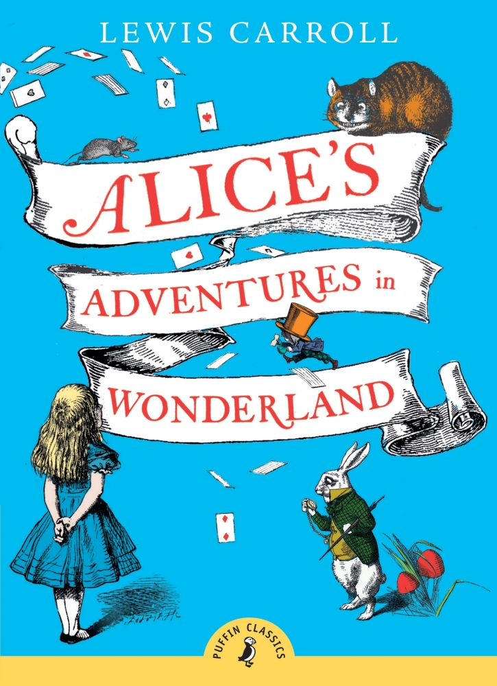

Alice in wonderland
BY Lewis Caroll
Wonderland of Lewis Carroll, an English author who hardly needs to be introduced.
Travelling through a fairy land,
Alice fins herself in a Duchess house, meets a mysterious Cheshire Cat,
plays an odd crocket with the Queen, visits a
completely mad “tea party” of March Hare and The Mad Hatter,
gets into a wonderful garden. But her amazing adventures
are still waiting for her. Lewis Carroll,
a master of at word play, logic, and fantasy created a remarkable piece of literature,
which has presented
hours of pleasure and joy to not a single generation of young readers.

More information
The book Alice in Wonderland failed to be named in an 1888 poll of the most popular children's stories.
Walt Disney's Alice in Wonderland (Dell Comics, 1951)
Walt Disney's Alice in Wonderland (Gold Key Comics, 1965)
Walt Disney's Alice in Wonderland (Whitman, 1984)
Alice in Wonderland (2011), Zenescope Entertainment
Alice au pays des Merveilles (1951) France TV broadcast of a stage version
Alice in Wonderland (1986), a BBC adaptation directed by Barry Letts and starring Kate Dorning
Can read at Alice in wonderland (การผจญภัยในดินแดนมหัศจรรย์ของอลิซ)